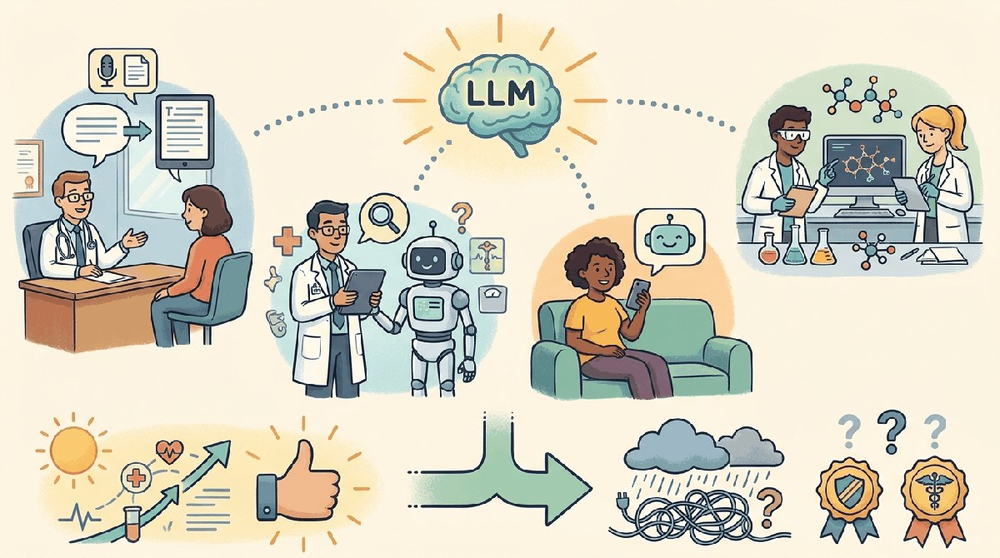

a Kurzgesagt-meets-XKCD visual metaphor with friendly characters and clear iconography, capturing the theme: Ambient documentation, clinical decision support, patient-facing chat, drug discovery. ...Healthcare combines the most extreme upside (clinician burnout is a public-health crisis; LLM ambient documentation is the most consistently valuable LLM application across the entire economy) with the most extreme regulatory friction (FDA, HIPAA, malpractice exposure, professional licensure). 2026 settled some of the highest-leverage use cases; many others are still in pilot. This chapter is the practitioner snapshot. Section 74.1 walks through the six use-case categories that have stabilized. Section 74.2 catalogs the failure modes specific to clinical contexts. Section 74.3 covers FDA SaMD, HIPAA, EU AI Act, and the broader regulatory framework. Section 74.4 walks through the four HIPAA-compliant deployment patterns. Section 74.5 closes with the vendor landscape, and Section 74.6 is the longer production-pattern companion.
Sections in This Chapter
- 74.1 Use Cases That Actually Work in Healthcare Ambient documentation, clinical decision support, patient triage, medical coding, literature synthesis, and drug discovery.
- 74.2 Failure Modes Specific to Healthcare Confident wrong answers, demographic bias, privacy leakage, and the mitigations that make HIPAA-compliant deployment possible.
- 74.3 Regulatory Framework for Healthcare LLMs FDA SaMD, HIPAA, EU AI Act, state licensure, CHAI assurance standards, and malpractice-insurance considerations.
- 74.4 HIPAA-Compliant Deployment Patterns BAA-covered cloud, de-identified-then-cloud, VPC-isolated, and on-premises open-weight, with their trade-offs.
- 74.5 Healthcare LLM Vendors and Further Reading Abridge, Suki, Dragon Copilot, Glass Health, Hippocratic AI, Epic, and the canonical sources.
What Comes Next
Healthcare produced the BAA-covered architecture and the ambient-documentation pattern that have become the highest-leverage LLM deployment across any industry. Chapter 75 turns to education, where the regulatory friction is different (FERPA, COPPA, accreditation) and the dominant use case (the Socratic tutor) requires a distinct architectural posture.